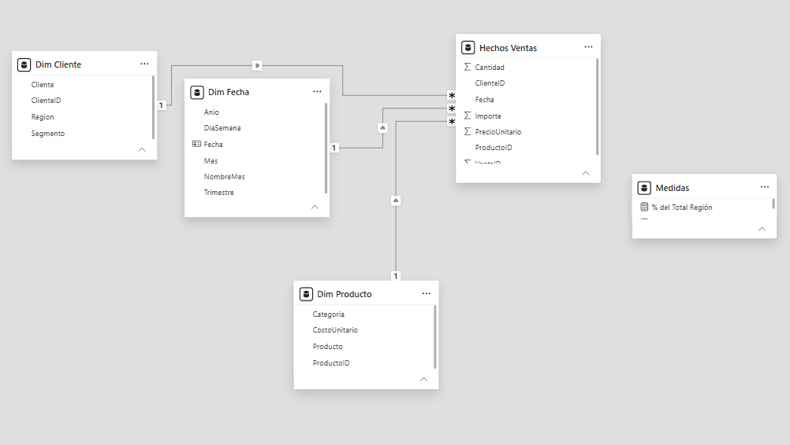
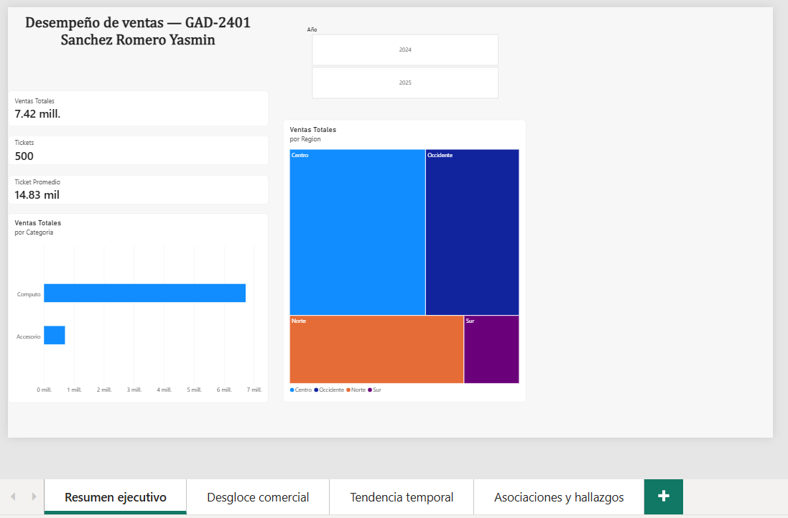
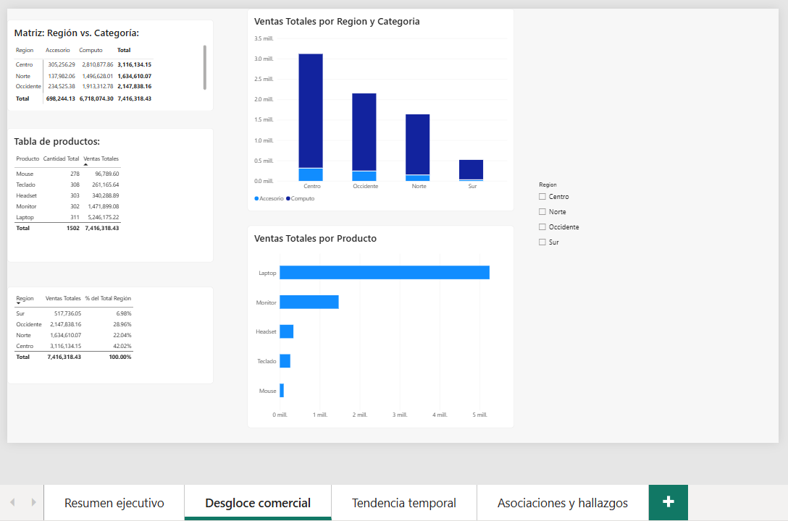
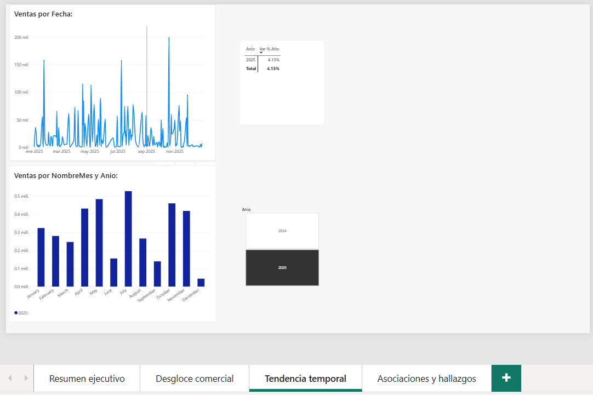
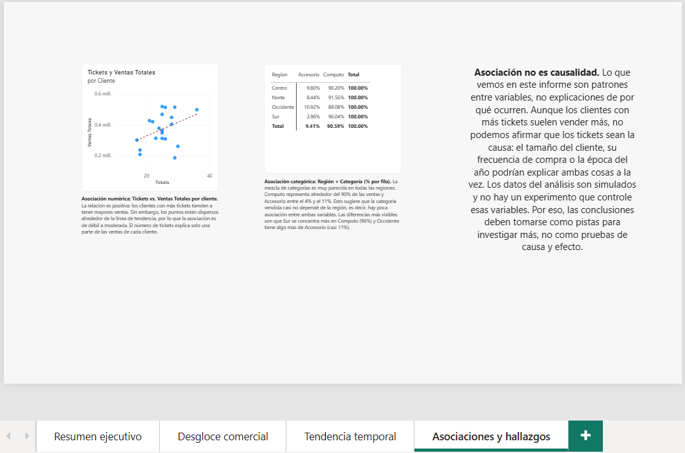

Ventas Totales
$7,416,318.43
Suma del importe de todas las ventas del periodo 2024–2025.
Análisis y visualización de datos · GAD-2401
Preparación de datos, modelo en estrella, DAX e informe de cuatro páginas en Power BI.
El análisis parte de una empresa que vende equipo de cómputo y accesorios a 20 clientes en cuatro regiones, con ventas registradas entre 2024 y 2025.
$7,416,318.43
Suma del importe de todas las ventas del periodo 2024–2025.
500
Número de ventas (tickets) únicas registradas.
$14,832.64
Ventas Totales divididas entre el número de Tickets.
Se usaron cuatro archivos CSV: la tabla de hechos hechos_ventas.csv y las dimensiones dim_producto.csv, dim_cliente.csv y dim_fecha.csv. El modelo limpio contiene 500 tickets, 5 productos, 20 clientes y fechas de 2024 a 2025.
En Power Query se cargaron los CSV, se asignaron tipos de datos correctos, se pusieron nombres legibles a las consultas y se revisaron nulos y columnas sobrantes.
| Revisión | Dónde | Qué se encontró y cómo se resolvió |
|---|---|---|
| Tipos de datos | Todas las consultas | Completar con lo que encontraste en Power Query. |
| Valores nulos | Todas las consultas | Completar con lo que encontraste en Power Query. |
| Columnas sobrantes | Todas las consultas | Completar con lo que encontraste en Power Query. |
El modelo es una estrella: la tabla Hechos Ventas está en el centro y se relaciona de uno a muchos con Dim Cliente, Dim Producto y Dim Fecha. Dim Fecha está marcada como tabla de fechas.

| Medida | Propósito |
|---|---|
| Ventas Totales | Suma del importe de las ventas. |
| Tickets | Cuenta las ventas únicas. |
| Ticket Promedio | Divide Ventas Totales entre Tickets. |
| Cantidad Total | Suma de las unidades vendidas. |
| Ventas Año Anterior | Ventas del mismo periodo del año previo (inteligencia de tiempo). |
| Var % Año | Variación porcentual de las ventas contra el año anterior. |
| % del Total Región | Participación de cada región en las ventas totales. |
| % por Fila Categoría | Proporción de cada categoría dentro de cada región. |
Las dos medidas de porcentaje se escribieron así:
% del Total Región =
DIVIDE([Ventas Totales],
CALCULATE([Ventas Totales], ALL('Dim Cliente'[Region])))
% por Fila Categoría =
DIVIDE([Ventas Totales],
CALCULATE([Ventas Totales], ALL('Dim Producto'[Categoria])))Validación: las ventas totales del modelo coinciden con el control de la práctica ($7,416,318.43 y 500 tickets).
El informe tiene cuatro páginas. Cada captura muestra una de ellas.




El gráfico de dispersión tiene un punto por cliente. La línea de tendencia sube: los clientes con más tickets tienden a vender más. Sin embargo, varios clientes se alejan de la línea, por ejemplo algunos con pocos tickets y ventas altas, o con muchos tickets y ventas bajas. La relación es positiva, de débil a moderada. Además, el monto de cada ticket también influye en el total de ventas.
La matriz muestra, dentro de cada región, qué porcentaje de las ventas corresponde a cada categoría.
| Región | Accesorio | Computo |
|---|---|---|
| Centro | 9.80% | 90.20% |
| Norte | 8.44% | 91.56% |
| Occidente | 10.92% | 89.08% |
| Sur | 3.96% | 96.04% |
| Total | 9.41% | 90.59% |
En todas las regiones Computo domina con cerca de nueve de cada diez pesos vendidos. Por eso la región casi no cambia qué categoría se vende y la asociación entre ambas variables es baja. Sur es el caso más extremo (96% en Computo) y Occidente es donde Accesorio tiene más peso (casi 11%).
Lo que se observa en este informe son patrones entre variables, no explicaciones de por qué ocurren. Aunque los clientes con más tickets suelen vender más, no se puede afirmar que los tickets sean la causa: el tamaño del cliente, su frecuencia de compra o la época del año podrían explicar ambas cosas a la vez. Los datos son simulados y no hay un experimento que controle esas variables. Por eso las conclusiones deben tomarse como pistas para investigar más y no como pruebas de causa y efecto.
Archivo .pbix de la práctica: